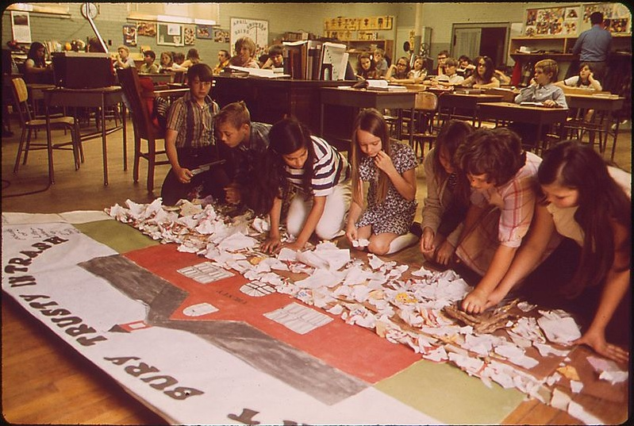

2.5 Construtivismo


Imagem: © Jim Olive, Environmental Protection Agency/Wikipedia, 1972
2.5.1 O que é construtivismo?
Tanto a teoria behaviorista quanto alguns elementos das teorias cognitivas da aprendizagem são deterministas, no sentido de que se acredita que o comportamento e a aprendizagem são baseados em regras e operam sob condições previsíveis e constantes sobre as quais o aprendiz individual tem pouco ou nenhum controle. No entanto, os construtivistas enfatizam a importância da consciência, do livre-arbítrio e das influências sociais na aprendizagem. Carl Rogers (1969) afirmou que:
cada indivíduo existe em um mundo de experiência em constante mudança no qual ele é o centro.
O mundo externo é interpretado dentro do contexto desse mundo privado. A crença de que os seres humanos são essencialmente ativos, livres e lutam por significado em termos pessoais existe há muito tempo e é um componente essencial do construtivismo.
Os construtivistas acreditam que o conhecimento é essencialmente subjetivo por natureza, construído a partir de nossas percepções e convenções mutuamente acordadas. De acordo com essa perspectiva, nós construímos novos conhecimentos em vez de simplesmente adquiri-los por memorização ou por transmissão daqueles que sabem para aqueles que não sabem. Os construtivistas acreditam que o significado ou a compreensão são alcançados ao assimilar informações, relacionando-as ao nosso conhecimento existente e processando-as cognitivamente (em outras palavras, pensando ou refletindo sobre novas informações). Os construtivistas sociais acreditam que esse processo funciona melhor por meio da discussão e da interação social, permitindo-nos testar e desafiar nossas próprias compreensões com as de outros. Para um construtivista, até mesmo as leis físicas existem porque foram construídas por pessoas a partir de evidências, observações e pensamento dedutivo ou intuitivo, e, mais importante, porque certas comunidades de pessoas (neste exemplo, os cientistas) concordaram mutuamente sobre o que constitui um conhecimento válido.
Os construtivistas argumentam que os indivíduos buscam conscientemente o significado para dar sentido ao seu ambiente em termos de experiências passadas e de seu estado presente. É uma tentativa de criar ordem em suas mentes a partir da desordem, de resolver incongruências e de reconciliar realidades externas com experiências anteriores. Os meios pelos quais isso é feito são complexos e multifacetados, desde a reflexão pessoal, a busca de novas informações, até o teste de ideias por meio do contato social com terceiros. Problemas são resolvidos e incongruências são organizadas por meio de estratégias como a busca de relações entre o que era conhecido e o que é novo, identificando semelhanças e diferenças, e testando hipóteses ou premissas. A realidade é sempre provisória e dinâmica.
Uma consequência da teoria construtivista é que cada indivíduo é único, porque a interação de suas diferentes experiências e sua busca por significado pessoal fazem com que cada pessoa seja diferente de qualquer outra. Assim, o comportamento não é previsível ou determinista, pelo menos não no nível individual (o que é uma característica distintiva fundamental em relação ao cognitivismo, que busca regras gerais de pensamento aplicáveis a todos os seres humanos). O ponto principal aqui é que, para os construtivistas, a aprendizagem é vista essencialmente como um processo social, que exige comunicação entre o aprendiz, o professor e outros. Esse processo social não pode ser substituído efetivamente pela tecnologia, embora a tecnologia possa facilitá-lo.
2.5.2 Abordagens construtivistas de ensino
Para muitos educadores, o contexto social da aprendizagem é crítico. As ideias são testadas não apenas com o professor, mas com colegas, amigos e colaboradores. Além disso, o conhecimento é adquirido principalmente por meio de processos ou instituições sociais que são construídos socialmente: escolas, universidades e, cada vez mais hoje em dia, comunidades on-line. Assim, o que se considera conhecimento 'valorizado' também é construído socialmente.
Os construtivistas acreditam que a aprendizagem é um processo constantemente dinâmico. A compreensão de conceitos ou princípios desenvolve-se e torna-se mais profunda com o tempo. Por exemplo, quando somos crianças muito pequenas, compreendemos o conceito de calor pelo tato. À medida que envelhecemos, percebemos que ele pode ser quantificado, como menos 20 graus centígrados sendo muito frio (a menos que você viva em Manitoba, onde -20ºC seria considerado normal). Ao estudarmos ciências, começamos a entender o calor de forma diferente, por exemplo, como uma forma de transferência de energia e, depois, como uma forma de energia associada ao movimento de átomos ou moléculas. Cada 'novo' componente precisa ser integrado às compreensões anteriores e também a outros conceitos relacionados, incluindo outros componentes da física molecular e da química.
Assim, os professores 'construtivistas' enfatizam fortemente que os aprendizes desenvolvam um significado pessoal por meio da reflexão, da análise e da construção gradual de camadas ou profundidades de conhecimento através do processamento mental consciente e contínuo. Reflexão, seminários, fóruns de discussão, trabalho em pequenos grupos e projetos são métodos fundamentais usados para apoiar a aprendizagem construtivista no ensino presencial (discutido em mais detalhes no Capítulo 3), e a aprendizagem colaborativa on-line e comunidades de prática são métodos construtivistas importantes na aprendizagem on-line (Capítulo 4).
Embora a resolução de problemas possa ser abordada de forma objetivista, predeterminando um conjunto de etapas ou processos a serem seguidos sob a orientação de 'especialistas', ela também pode ser abordada de maneira construtivista. O nível de orientação do professor pode variar em uma abordagem construtivista para a resolução de problemas: desde nenhuma orientação, passando pelo fornecimento de algumas diretrizes sobre como resolver o problema, pelo direcionamento dos estudantes para possíveis fontes de informação que possam ser relevantes, até levar os estudantes a propor soluções em um brainstorming. Os estudantes provavelmente trabalharão em grupos, ajudar-se-ão mutuamente e compararão as soluções para o problema. Pode não ser considerada uma única solução 'correta', mas o grupo pode considerar algumas soluções melhores do que outras, dependendo dos critérios de sucesso acordados para a resolução do problema.
Pode-se perceber que existem 'graus' de construtivismo, pois na prática o professor pode atuar como um primeiro entre iguais e ajudar a direcionar o processo para que resultados 'adequados' sejam alcançados. A diferença fundamental é que os estudantes precisam trabalhar para construir seu próprio significado, testando-o contra a 'realidade' e, como resultado, construindo ainda mais significado.
Os construtivistas também abordam a tecnologia para o ensino de forma diferente dos behavioristas. Sob a perspectiva construtivista, o cérebro tem mais plasticidade, adaptabilidade e complexidade do que os softwares atuais. Outros fatores exclusivamente humanos, como emoção, motivação, livre-arbítrio, valores e uma gama mais ampla de sentidos, tornam a aprendizagem humana muito diferente do modo como os computadores operam. Seguindo esse raciocínio, a educação seria muito melhor atendida se os cientistas da computação tentassem criar softwares para apoiar a aprendizagem que fossem mais reflexivos da maneira como a aprendizagem humana funciona, em vez de tentar enquadrar a aprendizagem humana nas restrições atuais da programação behaviorista de computadores. Isso será discutido em mais detalhes no Capítulo 4, Seção 4.
Embora as abordagens construtivistas possam ser e tenham sido aplicadas a todos os campos do conhecimento, elas são mais comumente encontradas em abordagens de ensino nas humanidades, ciências sociais, educação e outras áreas temáticas menos quantitativas.
Referências
Rogers, C. (1969) Freedom to Learn Columbus, OH: Charles E. Merrill Publishing Co.
Existem muitos livros sobre construtivismo, mas alguns dos melhores são as obras originais de alguns dos primeiros educadores e pesquisadores, em particular:
Piaget, J. and Inhelder, B., (1958) The Growth of Logical Thinking from Childhood to Adolescence New York: Basic Books, 1958
Searle, J. (1996) The construction of social reality New York: Simon & Shuster
Vygotsky, L. (1978) Mind in Society: Development of Higher Psychological Processes Cambridge MA: Harvard University Press
Atividade 2.5 Definindo os limites do construtivismo
1. Quais áreas do conhecimento você acha que seriam melhor 'ensinadas' ou aprendidas por meio de uma abordagem construtivista?
2. Quais áreas do conhecimento você acha que NÃO seriam adequadamente ensinadas por meio de uma abordagem construtivista?
3. Quais são seus motivos?
Feedback a ser incluído